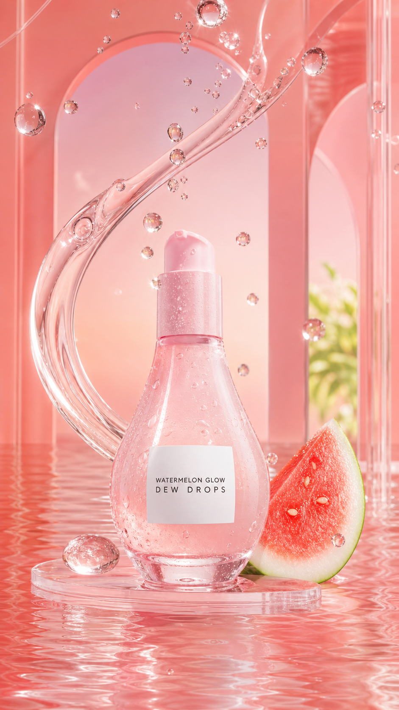

Concept created by LoomixUnsolicited concept
Glow RecipeReels + TikTok9:168 seconds
Watermelon Glow Dew Drops
The bottle and reflective serum texture already create a recognizable visual language. This direction lets one suspended dew drop become the transition from skincare step to glossy finishing touch.
Create the full adOpen product pageAI-generated visual direction

Concept art for discussion only. Product and brand belong to Glow Recipe.
Hooks
One drop closer to glassy glow.Skincare first. Glossy finish second.The dew step that catches the light.
Six-shot storyboard
- Open on one suspended, reflective dew drop.
- Let it fall into a clear serum ribbon.
- Reveal the pink bottle through the liquid.
- Show two pumps mixed into the routine.
- Catch the glossy finish turning in soft daylight.
- End on the bottle and CTA.
Caption
A lightweight dew step made to catch the light.
LoomixLoomix turns one product photo into a storyboard, short video, captions, and ready-to-post ad copy.